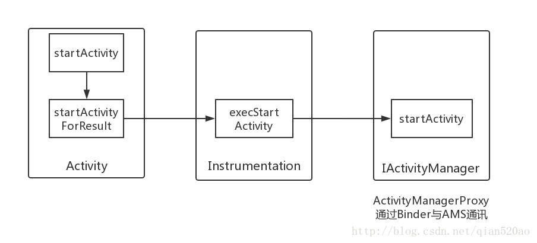
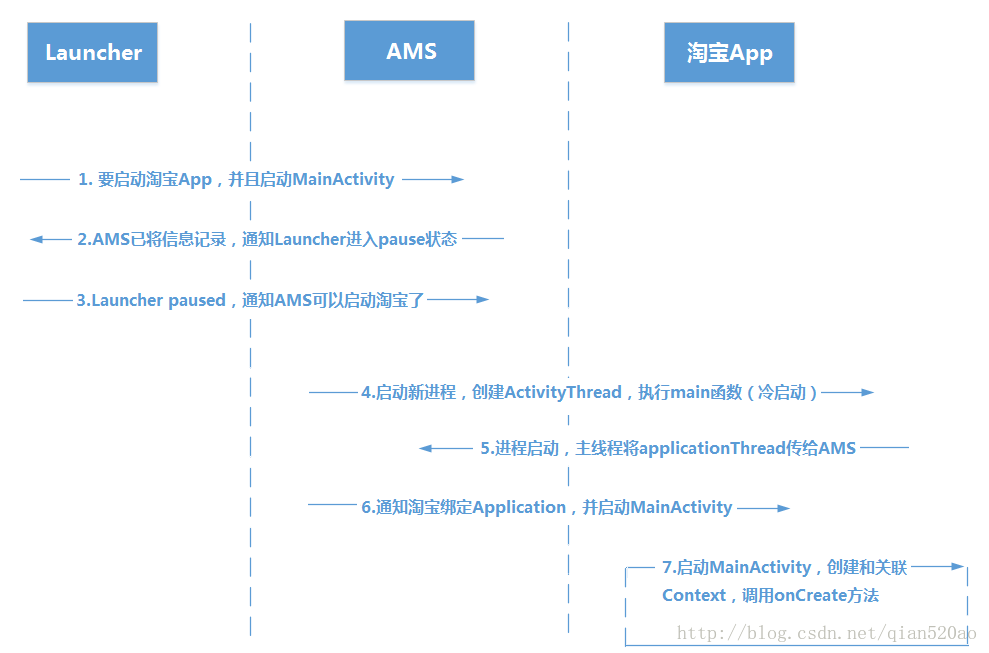
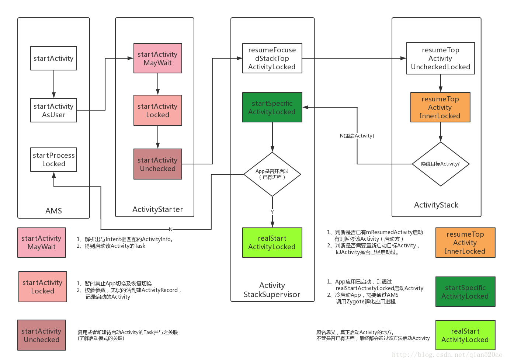

Launcher
手机桌面也是一个App，每一个应用的icon都罗列在Launcher上，点击icon触发onItemClick事件，下面例如我们要启动「淘宝」这个App，首先我们要在清单文件定义默认启动的Activity信息。
<activity android:name=".MainActivity">
<intent-filter>
<action android:name="android.intent.action.MAIN" />
<category android:name="android.intent.category.LAUNCHER" />
</intent-filter>
</activity>
然后Launcher获取到该信息之后，启动淘宝App
//该应用的包名
String pkg = info.activityInfo.packageName;
//应用的主activity类
String cls = info.activityInfo.name;
ComponentName componet = new ComponentName(pkg, cls);
Intent i = new Intent();
i.setComponent(componet);
startActivity(i);
启动Activity这一工作不管是相同应用的2个不同Activity的启动，或者是不同进程不同应用的Activity启动，都是由Activity大管家ActivityManagerService（简称AMS）全权管理，而他们之间的通讯就要用到Binder，通过Binder与AMS多次通讯，才能启动淘宝App。
整体流程
通过对Android操作系统的学习可以提高我们对操作系统在技术实现上的理解，这对于加强开发人员的内功是很有帮助的。
但是由于Android内部实现多数都比较复杂，在研究内部实现上应该更加侧重对整体流程的把握，而不能深入到代码细节不能自拔。
- Launcher通知AMS启动淘宝APP的MainActivity，也就是清单文件设置启动的Activity。
- AMS记录要启动的Activity信息，并且通知Launcher进入pause状态。
- Launcher进入pause状态后，通知AMS已经paused了，可以启动淘宝了。
- 淘宝app未开启过，所以AMS启动新的进程，并且在新进程中创建ActivityThread对象，执行其中的main函数方法。
- 淘宝app主线程启动完毕后通知AMS，并传入applicationThread以便通讯。
- AMS通知淘宝绑定Application并启动MainActivity。
- 淘宝启动MainActivitiy，并且创建和关联Context,最后调用onCreate方法。
startActivityForResult
我们从Activity的startActivity方法开始分析。
startActivity方法有好几种重载方式，但它们最终都会调用startActivityForResult方法。
@Override
public void startActivity(Intent intent, @Nullable Bundle options) {
if (options != null) {
startActivityForResult(intent, -1, options);
} else {
// Note we want to go through this call for compatibility with
// applications that may have overridden the method.
startActivityForResult(intent, -1);
}
}
在startActivityForResult方法内，会调用Instrumentation的execStartActivity方法。
public void startActivityForResult(@RequiresPermission Intent intent, int requestCode,@Nullable Bundle options) {
......
Instrumentation.ActivityResult ar =mInstrumentation.execStartActivity(
this, mMainThread.getApplicationThread(), mToken, this,
intent, requestCode, options);
......
}
Instrumentation
Instrumentation从字面上来看是仪器盘的意思，具体到程序中是管理activity的一个工具类，包括创建和启动Activity，activity的生命周期方法都是由Instrumentation这个仪器来控制，一个进程中只用一个Instrumentation实例。
/**
*
*
* @param who The Context from which the activity is being started.
* @param contextThread The main thread of the Context from which the activity
* is being started.
* @param token Internal token identifying to the system who is starting
* the activity; may be null.
* @param target Which activity is performing the start (and thus receiving
* any result);
* may be null if this call is no`t being made form an activity.
* @param intent The actual Intent to start.
* @param requestCode Identifier for this request's result; less than zero
* if the caller is not expecting a result.
* @param options Addition options.
*
*/
public ActivityResult execStartActivity(Context who, IBinder contextThread, IBinder token, Activity target,Intent intent, int requestCode, Bundle options) {
IApplicationThread whoThread = (IApplicationThread) contextThread;
......
try {
int result = ActivityManagerNative.getDefault().startActivity(whoThread, who.getBasePackageName(), intent,intent.resolveTypeIfNeeded(who.getContentResolver()),token, target != null ? target.mEmbeddedID : null,requestCode, 0, null, options);
//检查启动Activity的结果（抛出异常，例如清单文件未注册Activity）
checkStartActivityResult(result, intent);
} catch (RemoteException e) {
throw new RuntimeException("Failure from system", e);
}
return null;
}
我们截取了比较关键的代码片段来分析Instrumentation的execStartActivity方法，方法参数注释中也有对该方法的几个参数进行简单描述。下面我们来分析一下比较重要的2个参数，contextThread和token。
IBinder contextThread
在上一个方法中传入为mMainThread.getApplicationThread()
我们可以看到这是一个IBinder对象，说明它的作用就是用于进程间通讯的Binder对象。
mMainThread实际上是ActivityThread对象。ActivityThread，就是主线程，也就是UI线程，它是在App启动时创建的，它代表了App应用程序。
啥？ActivityThread代表了App应用程序，那Application类岂不是被架空了？其实，Application对我们App开发人员来说也许很重要，但是在Android系统中还真的没那么重要，他就是个上下文。Activity不是有个Context上下文吗？Application就是整个ActivityThread的上下文。
我们找到ActivityThread文件，其实这个getApplicationThread方法获取的是内部类ApplicationThread对象
而且ApplicationThread继承ApplicationThreadNative
public final class ActivityThread {//没有继承或者实现其他类。
final ApplicationThread mAppThread = new ApplicationThread();
public ApplicationThread getApplicationThread()
{
return mAppThread;
}
//ActivityThread的内部类ApplicationThread
private class ApplicationThread extends ApplicationThreadNative {
......
}
}
我们打开ApplicationThreadNative类(需要通过sdk的源码找到，具体路径为Sdk\sources\android-25(sdk版本)\android\app\ApplicationThreadNative)
通过构造方法我们就很清晰的可以得知原来这个ApplicationThreadNative就是相当于AIDL通讯中的Stub，也就是服务端，ApplicationThreadProxy即AIDL通讯中的Proxy，也就是客户端。所以ApplicationThread是通讯的具体实现类。
上面的介绍中我们也说过，Activity的启动实际上是多次进程间通讯的成果，看到这里我们就可以得出结论：ActivityThread通过内部类ApplicationThread来进行进程间通讯
public abstract class ApplicationThreadNative extends Binder implements IApplicationThread {
static public IApplicationThread asInterface(IBinder obj) {...}
@Override
public boolean onTransact(int code, Parcel data, Parcel reply, int flags)
throws RemoteException {...}
public IBinder asBinder(){return this;}
}
class ApplicationThreadProxy implements IApplicationThread {
private final IBinder mRemote;
public ApplicationThreadProxy(IBinder remote) {
mRemote = remote;
}
...
}
public interface IApplicationThread extends IInterface {...}
IBinder token
追溯到参数起源，这个token对象，是在Activity的attach方法中传入的，也就是Activity的创建与关联时候(下面的内容会提到)传入的Activity信息。
这也是个Binder对象，它代表了Launcher这个Activity，这里也通过Instrumentation传给AMS，AMS查询后，就知道是谁向AMS发起请求了。
//Activity
private IBinder mToken;
final void attach(Context context, ActivityThread aThread,
Instrumentation instr, IBinder token, int ident,
Application application, Intent intent, ActivityInfo info,
CharSequence title, Activity parent, String id,
NonConfigurationInstances lastNonConfigurationInstances,
Configuration config, String referrer, IVoiceInteractor voiceInteractor,
Window window) {
mToken = token;
}
contextThread和token这两个参数是伏笔，传递给AMS，以后AMS想反过来通知Launcher，就能通过这两个参数，找到Launcher。
startActivity
在Instrumentation中，启动Activity真正的实现是由ActivityManagerNative.getDefault()的startActivity方法来完成。
int result = ActivityManagerNative.getDefault()
.startActivity(whoThread, who.getBasePackageName(), intent,
intent.resolveTypeIfNeeded(who.getContentResolver()),
token, target != null ? target.mEmbeddedID : null,
requestCode, 0, null, options);
ActivityManagerService（下面简称AMS）继承自ActivityManagerNative（下面简称AMN），而AMN继承自Binder并实现了IActivityManager这个Binder接口，因此AMS也是一个Binder，它是IActivityManager的具体实现，由于ActivityManagerNative.getDefault()其实是一个IActivityManager类型的Binder对象，因此它的具体实现是AMS。
我们先看代码，捋一捋上述所说的关系。
public final class ActivityManagerService extends ActivityManagerNative {...}
public abstract class ActivityManagerNative extends Binder implements IActivityManager{...}
public interface IActivityManager extends IInterface {...}
首先我们来看这个命名方式，xxxNative，我们知道Stub持有Binder本地对象，Proxy持有的是Binder的代理对象。所以系统命名也是依据此因素（Native：本地的，土著的）作为命名规范。
/**
* Retrieve the system's default/global activity manager.
*/
static public IActivityManager getDefault() {
return gDefault.get();
}
private static final Singleton<IActivityManager> gDefault = new Singleton<IActivityManager>() {
protected IActivityManager create() {
IBinder b = ServiceManager.getService("activity");
IActivityManager am = asInterface(b);
return am;
}
};
/**
* Cast a Binder object into an activity manager interface, generating
* a proxy if needed.
*/
static public IActivityManager asInterface(IBinder obj) {
IActivityManager in = (IActivityManager)obj.queryLocalInterface(descriptor);
if (in != null) {
return in;//同一进程，返回Stub本地对象。
}
return new ActivityManagerProxy(obj);//跨进程，返回代理对象。
}
可以发现，在AMN 中，AMS这个Binder对象采用单例模式对外提供，Singleton是一个单例的封装类，第一次调用它的get方法时它会通过create方法来初始化AMS这个Binder对象，在后续的调用中则直接返回之前创建的对象（使用同一个AMS）。
分析create方法，在IActivityManager内（相当于Client），通过应用程序中的0号引用，可以向SMgr获取服务端（Server）的Binder引用。
AMN通过getDefault方法，从ServiceManager中获取AMS中Binder的引用对象，然后将它转换成ActivityManagerProxy对象（简称AMP），AMP就是AMS的代理对象。
类似AIDL中客户端的绑定代码，此时我们就可以通过ActivityManagerProxy（asInterface返回值为 IActivityManager），与AMS进行通讯。
//ActivityManagerProxy
public int startActivity(IApplicationThread caller, String callingPackage, Intent intent,String resolvedType, IBinder resultTo, String resultWho, int requestCode,int startFlags, ProfilerInfo profilerInfo, Bundle options) throws RemoteException {
Parcel data = Parcel.obtain();//从Parcel池中获取Parcel对象（通讯载体），用来写入数据
Parcel reply = Parcel.obtain();//如果方法有返回值，则写入返回值
data.writeInterfaceToken(IActivityManager.descriptor);//Binder唯一标识
//caller即上面提到的contextThread，AMS就可以通过它与Launcher通讯
data.writeStrongBinder(caller != null ? caller.asBinder() : null);
data.writeString(callingPackage);
intent.writeToParcel(data, 0);
data.writeString(resolvedType);
//resultTo即上面提到的token,包含Launcher的Activity信息
data.writeStrongBinder(resultTo);
data.writeString(resultWho);
data.writeInt(requestCode);
data.writeInt(startFlags);
......
//发送类型为START_ACTIVITY_TRANSACTION的请求给AMS，data包含Launcher和淘宝App的信息
mRemote.transact(START_ACTIVITY_TRANSACTION, data, reply, 0);
reply.readException();
//Instrumentation通过result来检查并抛出异常（Activity未在清单文件注册等）
int result = reply.readInt();
reply.recycle();
data.recycle();
return result;
}

从上面的分析可以知道，Activity是由AMN.getDefault()来启动的，而AMN.getDefault()实际上是AMS，因此Activity的启动过程又转移到了AMS中，为了继续分析这个过程，只需要查看AMS的startActivity方法即可。
Launcher通知AMS启动淘宝APP的MainActivity，也就是清单文件设置启动的Activity。

AMS
上个图，先通俗易懂的总结一下Activity启动的整体流程，对整体框架有一个大概认识。

AMS分析
再回顾一遍，通过对AMS 类的查看，我们可以知道AMS 也是一个Binder，并且它是IActivityManager的具体实现。
public final class ActivityManagerService extends ActivityManagerNative {...}
public abstract class ActivityManagerNative extends Binder implements IActivityManager{...}
public interface IActivityManager extends IInterface {...}
接着我们继续分析AMS的startActivity方法，这个阶段比较复杂和繁琐，一不小心就绕晕了，我们了解大致过程，不深入代码细节，对整体流程建立足够认识即可。
//AMS
@Override
public final int startActivity(IApplicationThread caller, String callingPackage,Intent intent, String resolvedType, IBinder resultTo, String resultWho, int requestCode,int startFlags, ProfilerInfo profilerInfo, Bundle bOptions) {
return startActivityAsUser(caller, callingPackage, intent, resolvedType, resultTo,resultWho, requestCode, startFlags, profilerInfo, bOptions,UserHandle.getCallingUserId());
}
@Override
public final int startActivityAsUser(IApplicationThread caller, String callingPackage,Intent intent, String resolvedType, IBinder resultTo, String resultWho, int requestCode,int startFlags, ProfilerInfo profilerInfo, Bundle bOptions, int userId) {
enforceNotIsolatedCaller("startActivity");
userId = mUserController.handleIncomingUser(Binder.getCallingPid(), Binder.getCallingUid(),userId, false, ALLOW_FULL_ONLY, "startActivity", null);
//7.0Acitivty启动管理类新增ActivityStarter(原本是ActivityStackSupervisor处理该过程)
return mActivityStarter.startActivityMayWait(caller, -1, callingPackage, intent,resolvedType, null, null, resultTo, resultWho, requestCode, startFlags,profilerInfo, null, null, bOptions, false, userId, null, null);
}
ActivityStarter
//ActivityStarter
final int startActivityMayWait(IApplicationThread caller, int callingUid,String callingPackage, Intent intent, String resolvedType,IVoiceInteractionSession voiceSession, IVoiceInteractor voiceInteractor,IBinder resultTo, String resultWho, int requestCode, int startFlags,ProfilerInfo profilerInfo, IActivityManager.WaitResult outResult, Configuration config,Bundle bOptions, boolean ignoreTargetSecurity, int userId,IActivityContainer iContainer, TaskRecord inTask) {
``````
//根据intent在系统中找到合适的应用的activity，如果有多个activity可选择，
//则会弹出ResolverActivity让用户选择合适的应用。
ActivityInfo aInfo = resolveActivity(intent, resolvedType, startFlags,profileFile, profileFd, userId);
``````
int res = startActivityLocked(caller, intent, ephemeralIntent, resolvedType,aInfo, rInfo, voiceSession, voiceInteractor,resultTo, resultWho, requestCode, callingPid,callingUid, callingPackage, realCallingPid, realCallingUid, startFlags,options, ignoreTargetSecurity, componentSpecified, outRecord, container,inTask);
``````
return res;
}
//在startActivityLocked方法里，对传过来的参数做一些校验，然后创建ActivityRecord对象，再调用startActivityUnchecked(7.0前是startActivityUncheckedLocked)方法启动Activity。
final int startActivityLocked(IApplicationThread caller, Intent intent, Intent ephemeralIntent,String resolvedType, ActivityInfo aInfo, ResolveInfo rInfo,IVoiceInteractionSession voiceSession, IVoiceInteractor voiceInteractor,IBinder resultTo, String resultWho, int requestCode, int callingPid, int callingUid,String callingPackage, int realCallingPid, int realCallingUid, int startFlags,ActivityOptions options, boolean ignoreTargetSecurity, boolean componentSpecified,ActivityRecord[] outActivity, ActivityStackSupervisor.ActivityContainer container,TaskRecord inTask) {
int err = ActivityManager.START_SUCCESS;
``````
//创建ActivityRecord对象
//ActivityRecord : 在AMS中，将用ActivityRecord来作为Activity的记录者,每次启动一个Actvity会有一个对应的ActivityRecord对象，表示Activity的一个记录
ActivityRecord r = new ActivityRecord(mService, callerApp, callingUid, callingPackage,intent, resolvedType, aInfo, mService.mConfiguration, resultRecord, resultWho,requestCode, componentSpecified, voiceSession != null, mSupervisor, container,options, sourceRecord);
``````
err = startActivityUnchecked(r, sourceRecord, voiceSession, voiceInteractor, startFlags,
true, options, inTask);
//此处将通知ActivityStarter, Activity对应的Task被移动到前台
postStartActivityUncheckedProcessing(r, err, stack.mStackId, mSourceRecord, mTargetStack);
return err;
}
在startActivityLocked方法里，对传过来的参数做一些校验，然后创建ActivityRecord对象，再调用startActivityUnchecked方法启动Activity。
startActivityUnchecked方法负责调度ActivityRecord和Task，理解该方法是理解Actvity启动模式的关键。
startActivityUnchecked方法调度task的算法非常复杂，和当前回退栈，要启动的acitivity的启动模式以及taskAffinity属性，启动activity时设置的intent的flag等诸多要素相关，intent的flag就有很多种情况，故此算法非常复杂，需要阅读源码并结合特定启动情况才能理解。
接下来调用ActivityStack的startActivityLocked将ActivityRecord加入到回退栈里
//ActivityStarter
private int startActivityUnchecked(final ActivityRecord r, ActivityRecord sourceRecord,
IVoiceInteractionSession voiceSession, IVoiceInteractor voiceInteractor,
int startFlags, boolean doResume, ActivityOptions options, TaskRecord inTask) {
``````
//ActivityStack的startActivityLocked,不要搞混了。
//同时调用WindowManager准备App切换相关的工作
mTargetStack.startActivityLocked(mStartActivity, newTask, mKeepCurTransition, mOptions);
if (mDoResume) {
final ActivityRecord topTaskActivity = mStartActivity.task.topRunningActivityLocked();
if (!mTargetStack.isFocusable()
|| (topTaskActivity != null && topTaskActivity.mTaskOverlay
&& mStartActivity != topTaskActivity)) {
// If the activity is not focusable, we can't resume it, but still would like to
// make sure it becomes visible as it starts (this will also trigger entry
// animation). An example of this are PIP activities.
// Also, we don't want to resume activities in a task that currently has an overlay
// as the starting activity just needs to be in the visible paused state until the
// over is removed.
} else {
//最终调用ActivityStackSupervisor的resumeFocusedStackTopActivityLocked
mSupervisor.resumeFocusedStackTopActivityLocked(mTargetStack, mStartActivity,
mOptions);
}
}
ActivityStackSupervisor
//ActivityStackSupervisor
boolean resumeFocusedStackTopActivityLocked() {
return resumeFocusedStackTopActivityLocked(null, null, null);
}
boolean resumeFocusedStackTopActivityLocked(
ActivityStack targetStack, ActivityRecord target, ActivityOptions targetOptions) {
if (targetStack != null && isFocusedStack(targetStack)) {
//待启动Activity对应的Task为前台Task时，调用该Task对应ActivityStack的resumeTopActivityUncheckedLocked函数
return targetStack.resumeTopActivityUncheckedLocked(target, targetOptions);
}
final ActivityRecord r = mFocusedStack.topRunningActivityLocked();
if (r == null || r.state != RESUMED) {
//否则只是调用当前前台栈的resumeTopActivityUncheckedLocked
mFocusedStack.resumeTopActivityUncheckedLocked(null, null);
}
return false;
}
ActivityStack
接着跟进ActivityStack
//ActivityStack
boolean resumeTopActivityUncheckedLocked(ActivityRecord prev, ActivityOptions options) {
``````
result = resumeTopActivityInnerLocked(prev, options);
return result;
}
private boolean resumeTopActivityInnerLocked(ActivityRecord prev, ActivityOptions options) {
//mResumedActivity指向上一次启动的Activity(Launcher)
if (mResumedActivity != null) {
``````
//通知Launcher进入pause状态
pausing |= startPausingLocked(userLeaving, false, true, dontWaitForPause);
}
if (pausing) {//Launcher已经暂停了
``````
if (next.app != null && next.app.thread != null) {
//如果app已经启动过
//调用淘宝(待启动)Activity所在进程的优先级，保证其不被kill
mService.updateLruProcessLocked(next.app, true, null);
}
}
``````
if (next.app != null && next.app.thread != null) {
//如果Intent不为空，调用NewIntent方法传入Intent
next.app.thread.scheduleNewIntent(next.newIntents, next.appToken, false);
//假设淘宝App已经启动，点击Home键返回到Launcher,再次从Launcher启动淘宝(或者第三方启动已开启的App)
next.app.thread.scheduleResumeActivity(next.appToken, next.app.repProcState,
mService.isNextTransitionForward(), resumeAnimOptions);
``````
} else {
``````
//创建进程，冷启动Activity。或者已启动App，重新启动Activity
mStackSupervisor.startSpecificActivityLocked(next, true, true);
}
return true;
}
resumeTopActivityInnerLocked函数非常繁琐，但整体来讲应该只有两个比较关键的地方：
- 判断是否已有Activity(mResumedActivity)启动（即Launcher，通过Launcher启动淘宝的），有则暂停该Activity
- 判断是否需要重新启动目标Activity，即Activity是否已经启动过。（例如保存在后台，应用切换）
2.AMS记录要启动的Activity信息，并且通知Launcher进入pause状态。
3.Launcher进入pause状态后，通知AMS已经paused了，可以启动淘宝了。
创建进程
接下来的操作就比较重要了，创建进程，启动Activity。
//ActivityStackSupervisor
void startSpecificActivityLocked(ActivityRecord r,
boolean andResume, boolean checkConfig) {
// Is this activity's application already running?
ProcessRecord app = mService.getProcessRecordLocked(r.processName,
r.info.applicationInfo.uid, true);
if (app != null && app.thread != null) {
try {
if ((r.info.flags&ActivityInfo.FLAG_MULTIPROCESS) == 0
|| !"android".equals(r.info.packageName)) {
app.addPackage(r.info.packageName, r.info.applicationInfo.versionCode,
mService.mProcessStats);
}
//目标Activity的App已经启动（存在ActivityThread），则重启Activity
realStartActivityLocked(r, app, andResume, checkConfig);
return;
} catch (RemoteException e) {
``````
}
}
//如果进程不存在，则通过zygote创建应用进程。
mService.startProcessLocked(r.processName, r.info.applicationInfo, true, 0,
"activity", r.intent.getComponent(), false, false, true);
}
从上面代码可以了解到startSpecificActivityLocked为启动Activity的两种不同情况
- 例如从Launcher冷启动淘宝，则需要创建新进程，通过AMS调用Zygote(孕育天地)孵化应用进程。
- 如果淘宝App已经启动，例如从MainActivity跳转到LoginActivity，则通过realStartActivityLocked启动。
因为我们开头以Launcher启动淘宝为例子，所以我们硬着头皮继续分析AMS创建进程以及Activity的绑定过程。
上面分析到mService.startProcessLocked,到了这里我们直接看启动线程的方法，中间的过程实在是略复杂。
4.淘宝App未开启过，所以AMS启动新的进程，并且在新进程中创建ActivityThread对象，执行其中的main函数方法。
//ActivityServiceManager
//Process.java的start函数，将通过socket发送消息给zygote
//zygote将派生出一个子进程，子进程将通过反射调用ActivityThread的main函数
Process.ProcessStartResult startResult = Process.start("android.app.ActivityThread",
app.processName, uid, uid, gids, debugFlags, mountExternal,
app.info.targetSdkVersion, app.info.seinfo, requiredAbi, instructionSet,
app.info.dataDir, entryPointArgs);
Zygote进程孵化出新的应用进程后，通过反射执行ActivityThread类的main方法。在该方法里会先准备好Looper和消息队列，然后调用attach方法将应用进程绑定到AMS，然后进入loop循环，不断地读取消息队列里的消息，并分发消息。
//ActivityThread
public static void main(String[] args) {
``````
//准备主线程的Looper，下篇博文分析Handler,Looper
Looper.prepareMainLooper();
//创建当前进程的ActivityThread
ActivityThread thread = new ActivityThread();
//将该进程绑定到AMS
thread.attach(false);
if (sMainThreadHandler == null) {
//保存进程对应的主线程Handler
sMainThreadHandler = thread.getHandler();
}
``````
//进入主线程的消息循环
Looper.loop();
``````
}
//上面说过，ApplicationThread是ActivityThread用来与AMS通讯的中介
final ApplicationThread mAppThread = new ApplicationThread();
private void attach(boolean system) {
if (!system) {
final IActivityManager mgr = ActivityManagerNative.getDefault();
//调用AMS的attachApplication方法，将ApplicationThread对象绑定至ActivityManagerService
//这样AMS就可以通过ApplicationThread代理对象控制应用进程
mgr.attachApplication(mAppThread);
} else {
``````
}
}
至此，进程创建完毕，并且也有了主线程，剩下的便是启动Activity和关联context等初始化操作了。
5.淘宝app主线程启动完毕后通知AMS，并传入applicationThread以便通讯。
AMS启动Activity小结
至此通过下图总结一下在AMS启动Activity的大致流程，各个方法函数像一台机器上的不同零件，各尽其责，分工明确。
虽然错综复杂，但是耦合性低，比如说启动模式需要优化，重新完善startActivityUnchecked方法函数即可。

关联Activity
在这个时候，虽然有了app进程，和主线程，但是仍是一副空壳。
没有activity信息，没有关联上下文，这时候就要请出AMS来进行指挥。
因为主线程main入口通过attach方法将 ApplicationThread 发送给 AMS ，所以通过applicationThread这个桥梁来通知ActivityThread创建/关联和启动Activity。
//AMS
@Override
public final void attachApplication(IApplicationThread thread) {
synchronized (this) {
//获取applicationThread的进程id(也就是淘宝应用进程)
int callingPid = Binder.getCallingPid();
final long origId = Binder.clearCallingIdentity();
attachApplicationLocked(thread, callingPid);
Binder.restoreCallingIdentity(origId);
}
}
通过Binder获取proxy（ApplicationThread ）方的进程id，也就是获取目标(淘宝)进程的Pid。
//Binder
/**
* Return the ID of the process that sent you the current transaction
* that is being processed. This pid can be used with higher-level
* system services to determine its identity and check permissions.
* If the current thread is not currently executing an incoming transaction,
* then its own pid is returned.
*/
public static final native int getCallingPid();
接下来重点分析attachApplicationLocked方法
//AMS
private final boolean attachApplicationLocked(IApplicationThread thread,
int pid) {
// Find the application record that is being attached... either via
// the pid if we are running in multiple processes, or just pull the
// next app record if we are emulating process with anonymous threads.
ProcessRecord app;
if (pid != MY_PID && pid >= 0) {
synchronized (mPidsSelfLocked) {
app = mPidsSelfLocked.get(pid);
}
} else {
app = null;
}
//因为进程由AMS启动，所以在AMS中一定会有ProcessRecord（进程记录）
//如果没有ProcessRecord，则需要杀死该进程并退出
if (app == null) {
``````
return false;
}
// If this application record is still attached to a previous
// process, clean it up now.
if (app.thread != null) {
//如果从ProcessRecord中获取的IApplicationThread不为空，则需要处理该IApplicationThread
//因为有可能此Pid为复用，旧应用进程刚释放，内部IApplicationThread尚未清空，
//同时新进程又刚好使用了此Pid
handleAppDiedLocked(app, true, true);
}
//创建死亡代理（进程kill后通知AMS）
AppDeathRecipient adr = new AppDeathRecipient(app, pid, thread);
//进程注册成功，移除超时通知
mHandler.removeMessages(PROC_START_TIMEOUT_MSG, app);
``````
try {
//******绑定Application******
thread.bindApplication(processName, appInfo, providers, app.instrumentationClass,
profilerInfo, app.instrumentationArguments, app.instrumentationWatcher,
app.instrumentationUiAutomationConnection, testMode,
mBinderTransactionTrackingEnabled, enableTrackAllocation,
isRestrictedBackupMode || !normalMode, app.persistent,
new Configuration(mConfiguration), app.compat,
getCommonServicesLocked(app.isolated),
mCoreSettingsObserver.getCoreSettingsLocked());
updateLruProcessLocked(app, false, null);
} catch (Exception e) {
``````
//bindApplication失败后，重启进程
startProcessLocked(app, "bind fail", processName);
return false;
}
try {
//******启动Activity(启动淘宝MainActivity)******
if (mStackSupervisor.attachApplicationLocked(app)) {
didSomething = true;//didSomething表示是否有启动四大组件
}
} catch (Exception e) {
badApp = true;
}
``````
//绑定service和Broadcast的Application
if (badApp) {
//如果以上组件启动出错，则需要杀死进程并移除记录
app.kill("error during init", true);
handleAppDiedLocked(app, false, true);
return false;
}
//如果以上没有启动任何组件，那么didSomething为false
if (!didSomething) {
//调整进程的oom_adj值， oom_adj相当于一种优先级
//如果应用进程没有运行任何组件，那么当内存出现不足时，该进程是最先被系统“杀死”
updateOomAdjLocked();
}
return true;
}
在attachApplicationLocked中有两个比较重要的方法函数，分析到这里我们的文章也要进入尾声了。
- thread.bindApplication（…） : 绑定Application到ActivityThread
- mStackSupervisor.attachApplicationLocked（app） : 启动Activity（7.0前为mMainStack.realStartActivityLocked()）
bindApplication
在上面我们说道，ActivityThread通过ApplicationThread与AMS进行通讯，所以上面的thread.bindApplication（...）方法，就应该是通过ApplicationThread进行传达。
在ActivityThread的内部类ApplicationThread中，我们找到bindApplication方法
//ActivityThread
//内部类ApplicationThread
private class ApplicationThread extends ApplicationThreadNative {
public final void bindApplication(...一大堆参数...) {
AppBindData data = new AppBindData();
//给data设置参数...
``````
sendMessage(H.BIND_APPLICATION, data);
}
}
private void sendMessage(int what, Object obj, int arg1, int arg2, boolean async) {
Message msg = Message.obtain();
//给msg设置参数
``````
mH.sendMessage(msg);
}
发送消息是通过H的Handler类来完成的，这个命名贼个性，很令人印象深刻。PS : 我怀疑是编写这个类的工程师词穷了…
private class H extends Handler {
public static final int LAUNCH_ACTIVITY = 100;
public static final int PAUSE_ACTIVITY = 101;
``````
public static final int RESUME_ACTIVITY = 107;
public static final int DESTROY_ACTIVITY = 109;
public static final int BIND_APPLICATION = 110;
public static final int EXIT_APPLICATION = 111;
``````
public void handleMessage(Message msg) {
switch (msg.what) {
case LAUNCH_ACTIVITY: {
Trace.traceBegin(Trace.TRACE_TAG_ACTIVITY_MANAGER, "activityStart");
final ActivityClientRecord r = (ActivityClientRecord) msg.obj;
r.packageInfo = getPackageInfoNoCheck(
r.activityInfo.applicationInfo, r.compatInfo);
handleLaunchActivity(r, null, "LAUNCH_ACTIVITY");
Trace.traceEnd(Trace.TRACE_TAG_ACTIVITY_MANAGER);
} break;
``````
//绑定application
case BIND_APPLICATION:
Trace.traceBegin(Trace.TRACE_TAG_ACTIVITY_MANAGER, "bindApplication");
AppBindData data = (AppBindData)msg.obj;
handleBindApplication(data);
Trace.traceEnd(Trace.TRACE_TAG_ACTIVITY_MANAGER);
break;
}
}
}
可以看出，这个H类相当于ActivityThread和ApplicationThread的中介人，也就是拉皮条的。
ActivityThread通过ApplicationThread与AMS通讯。
ApplicationThread通过H与ActivityThread通讯，处理Activity事务。
那么既然H、ApplicationThread都在ActivityThread类里，为何ApplicationThread还要通过Handler来发送消息？
- 便于集中管理，方便打印Log日志等，H就是这其中的大管家。
ActivityThread通过ApplicationThread和AMS进行进程间通信，AMS以进程通讯的方式来完成ActivityThread的请求后调用ApplicationThread中的Binder方法，然后ApplicationThread会向H发送消息，H收到消息后会将ApplicationThread中的逻辑切换到ActivityThread中去执行，即切换到主线程中去执行，这个过程就是主线程的消息循环模型。
而且有一点要注意的是，这个ActivityThread并不是一个线程Thread，它是final类并且无继承或者实现其它类，它的作用就是在main方法内消息循环，处理主线程事务。（还需了解Looper及消息机制）
言归正传，上面ApplicationThread给H发送BIND_APPLICATION标识，在H中，通过handleBindApplication处理application的绑定事务。
//ActivityThread
private void handleBindApplication(AppBindData data) {
``````
//根据传递过来的ApplicationInfo创建一个对应的LoadedApk对象
data.info = getPackageInfoNoCheck(data.appInfo, data.compatInfo);//获取LoadedApk
/**
* For apps targetting Honeycomb or later, we don't allow network usage
* on the main event loop / UI thread. This is what ultimately throws
* {@link NetworkOnMainThreadException}.
*/
//禁止在主线程使用网络操作
if (data.appInfo.targetSdkVersion >= Build.VERSION_CODES.HONEYCOMB) {
StrictMode.enableDeathOnNetwork();
}
/**
* For apps targetting N or later, we don't allow file:// Uri exposure.
* This is what ultimately throws {@link FileUriExposedException}.
*/
//7.0引入Fileprovide
if (data.appInfo.targetSdkVersion >= Build.VERSION_CODES.N) {
StrictMode.enableDeathOnFileUriExposure();
}
``````
//创建进程对应的Android运行环境ContextImpl
final ContextImpl appContext = ContextImpl.createAppContext(this, data.info);
if ((InstrumentationInfo)ii != null) {
``````
} else {
//注意Activity的所有生命周期方法都会被Instrumentation对象所监控，
//也就说执行Activity的生命周期方法前后一定会调用Instrumentation对象的相关方法
mInstrumentation = new Instrumentation();
}
try {
``````
Application app = data.info.makeApplication(data.restrictedBackupMode, null);
mInitialApplication = app;
//加载进程对应Package中携带的ContentProvider
installContentProviders(app, data.providers);
``````
mInstrumentation.onCreate(data.instrumentationArgs);
try {
//这里会调用Application的onCreate方法
//故此Applcation对象的onCreate方法会比ActivityThread的main方法后调用
//但是会比这个应用的所有activity先调用
mInstrumentation.callApplicationOnCreate(app);
} catch (Exception e) {
``````
}
} finally {
StrictMode.setThreadPolicy(savedPolicy);
}
}
如上文所述，handleBindApplication的目的是让一个Java进程融入到Android体系中。
因此，该函数中的代码主要进行以下工作：
- 按照Android的要求，完成对进程基本参数的设置置，包括设置进程名、时区、资源及兼容性配置；
同时也添加了一些限制，例如主线程不能访问网络等。
- 创建进程对应的ContextImpl、LoadedApk、Application等对象，同时加载Application中的ContentProvider，并初始化Application。
- 使用Instrumentation监控Activity的生命周期。（一个进程对应一个Instrumentation实例）
当完成上述工作后，新建的进程终于加入到了Android体系。
6.AMS通知淘宝绑定Application并启动MainActivity。
启动Activity
attachApplicationLocked
在上述代码AMS的attachApplicationLocked方法中，我们说道：
在attachApplicationLocked中有两个比较重要的方法函数，分析到这里我们的文章也要进入尾声了。
- thread.bindApplication（…） : 绑定Application到ActivityThread
- mStackSupervisor.attachApplicationLocked（app） : 启动Activity
绑定了Application之后，我们就可以启动Activity(淘宝MainActivity)。
//ActivityStackSupervisor
boolean attachApplicationLocked(ProcessRecord app) throws RemoteException {
final String processName = app.processName;
boolean didSomething = false;
//ActivityStackSupervisor维护着终端中所有ActivityStack
//此处通过轮询，找出前台栈顶端的待启动Activity
for (int displayNdx = mActivityDisplays.size() - 1; displayNdx >= 0; --displayNdx) {
ArrayList<ActivityStack> stacks = mActivityDisplays.valueAt(displayNdx).mStacks;
for (int stackNdx = stacks.size() - 1; stackNdx >= 0; --stackNdx) {
final ActivityStack stack = stacks.get(stackNdx);
if (!isFocusedStack(stack)) {
continue;
}
ActivityRecord hr = stack.topRunningActivityLocked();
if (hr != null) {
//前台待启动的Activity与当前新建的进程一致时，启动这个Activity
if (hr.app == null && app.uid == hr.info.applicationInfo.uid
&& processName.equals(hr.processName)) {
try {
//realStartActivityLocked进行实际的启动工作
if (realStartActivityLocked(hr, app, true, true)) {
didSomething = true;
}
} catch (RemoteException e) {
}
}
}
}
}
return didSomething;
}
大概系统工程师也觉得这个启动过程贼鸡儿绕了，最终启动的方法命名为realStartActivityLocked，意味着告诉你，大伙儿不要搞晕了，这个就是最后启动Activity的方法了。
最后我们直捣黄龙，在ActivityStackSupervisor方法中，我们找到如下代码
//ActivityStackSupervisor
app.thread.scheduleLaunchActivity(new Intent(r.intent), r.appToken,
System.identityHashCode(r), r.info, new Configuration(mService.mConfiguration),
new Configuration(task.mOverrideConfig), r.compat, r.launchedFromPackage,
task.voiceInteractor, app.repProcState, r.icicle, r.persistentState, results,
newIntents, !andResume, mService.isNextTransitionForward(), profilerInfo);
看到这里想必大伙儿都明白了，AMS最后通过ApplicationThread通知ActivityThread启动Activity，感觉这一切的通讯都像发电报一样，鬼斧神工出神入化，皆出架构师之目营心匠。
那么到这里我们就能推算出接下来的老套路了
ApplicationThread—> H—> ActivityThread—> 最终启动Activity的方法。
ActivityThread
//ActivityThread
//内部类ApplicationThread
private class ApplicationThread extends ApplicationThreadNative {
@Override
public final void scheduleLaunchActivity(Intent intent, IBinder token, int ident,
ActivityInfo info, Configuration curConfig, Configuration overrideConfig,
CompatibilityInfo compatInfo, String referrer, IVoiceInteractor voiceInteractor,
int procState, Bundle state, PersistableBundle persistentState,
List<ResultInfo> pendingResults, List<ReferrerIntent> pendingNewIntents,
boolean notResumed, boolean isForward, ProfilerInfo profilerInfo) {
updateProcessState(procState, false);
ActivityClientRecord r = new ActivityClientRecord();
//设置参数
``````
//从LAUNCH_ACTIVITY这个标识我们就可以知道，它就是用来启动Activity
sendMessage(H.LAUNCH_ACTIVITY, r);
}
}
private class H extends Handler {
``````
public void handleMessage(Message msg) {
switch (msg.what) {
case LAUNCH_ACTIVITY: {
Trace.traceBegin(Trace.TRACE_TAG_ACTIVITY_MANAGER, "activityStart");
final ActivityClientRecord r = (ActivityClientRecord) msg.obj;
//利用ApplicationInfo等信息得到对应的LoadedApk，保存到ActivityClientRecord
//ActivityClientRecord包含Activity相关的信息
r.packageInfo = getPackageInfoNoCheck(
r.activityInfo.applicationInfo, r.compatInfo);
handleLaunchActivity(r, null, "LAUNCH_ACTIVITY");
Trace.traceEnd(Trace.TRACE_TAG_ACTIVITY_MANAGER);
} break;
``````
}
}
}
//ActivityThread
private void handleLaunchActivity(ActivityClientRecord r, Intent customIntent) {
``````
Activity a = performLaunchActivity(r, customIntent);
if (a != null) {
``````
handleResumeActivity(r.token, false, r.isForward,
!r.activity.mFinished && !r.startsNotResumed, r.lastProcessedSeq, reason);
``````
}
``````
}
handleLaunchActivity方法里有有两个重要的函数调用,
- performLaunchActivity : 会调用Activity的onCreate,onStart,onResotreInstanceState方法
- handleResumeActivity : 会调用Activity的onResume方法.
从上面的源码可以看出，performLaunchActivity方法最终完成了Activity对象的创建和启动过程，并且ActivityThread通过handleResumeActivity方法来调用被启动Activity的onResume这一生命周期方法。
performLaunchActivity
【performLaunchActivity】 这个方法主要完成了如下几件事。【摘自Android开发艺术探索】
从ActivityClientRecord中获取待启动的Activity的组件信息。
//ActivityThread的performLaunchActivity方法
ActivityInfo aInfo = r.activityInfo;
if (r.packageInfo == null) {
r.packageInfo = getPackageInfo(aInfo.applicationInfo, r.compatInfo,
Context.CONTEXT_INCLUDE_CODE);
}
ComponentName component = r.intent.getComponent();
if (component == null) {
component = r.intent.resolveActivity(
mInitialApplication.getPackageManager());
r.intent.setComponent(component);
}
if (r.activityInfo.targetActivity != null) {
component = new ComponentName(r.activityInfo.packageName,
r.activityInfo.targetActivity);
}
通过Instrumentation的newActivity方法使用类加载器创建Activity对象。
//ActivityThread的performLaunchActivity方法
Activity activity = null;
try {
java.lang.ClassLoader cl = r.packageInfo.getClassLoader();
activity = mInstrumentation.newActivity(
cl, component.getClassName(), r.intent);
StrictMode.incrementExpectedActivityCount(activity.getClass());
r.intent.setExtrasClassLoader(cl);
r.intent.prepareToEnterProcess();
if (r.state != null) {
r.state.setClassLoader(cl);
}
} catch (Exception e) {
``````
}
通过LoadedApk的makeApplication方法来创建Application对象。
//ActivityThread的performLaunchActivity方法
Application app = r.packageInfo.makeApplication(false, mInstrumentation);//r.packageInfo为LoadedApk对象
其实在我们上面的bindApplication中，我们就有介绍到通过LoadedApk创建Application，并且创建完毕后，通过Instrumentation的callApplicationOnCreate来调用Application的onCreate方法
Application app = data.info.makeApplication(data.restrictedBackupMode, null);
``````
mInstrumentation.callApplicationOnCreate(app);
所以第三步是为了判断Application是否为空，而且我们从makeApplication方法中也能看出如果Application已经被创建过了，那么就不会再重复创建了。
创建ContextImpl对象，并通过Activity的attach方法来完成一些重要数据的初始化。
Context appContext = createBaseContextForActivity(r, activity);//创建ContextImpl对象
``````
Window window = null;
if (r.mPendingRemoveWindow != null && r.mPreserveWindow) {
window = r.mPendingRemoveWindow;
r.mPendingRemoveWindow = null;
r.mPendingRemoveWindowManager = null;
}
activity.attach(appContext, this, getInstrumentation(), r.token,
r.ident, app, r.intent, r.activityInfo, title, r.parent,
r.embeddedID, r.lastNonConfigurationInstances, config,
r.referrer, r.voiceInteractor, window);
ContextImpl是一个很重要的数据结构，它是Context的具体实现，Context中的大部分逻辑都是由ContextImpl来完成的。ContextImpl来完成的。ContextImpl是通过Activity的attach方法来和Activity建立关联的，除此之外，在attach方法中Activity还会完成Window的创建并建立自己和Window的关联，这样当Window接收到外部输入事件后就可以将事件传递给Activity。
调用Activity的onCreate方法
mInstrumentation.callActivityOnCreate(activity, r.state);
由于Activity的onCreate已经被调用，这也意味着Activity已经完成了整个启动过程。
调用Activity的onStart,onResotreInstanceState方法
mInstrumentation.callActivityOnCreate(activity, r.state);
``````
mInstrumentation.callActivityOnRestoreInstanceState(activity, r.state);
总结
至此从Launcher启动Activity的工作过程整个流程已经阐述完毕了，通过这次分析，对启动Activity的来龙去脉有了大致的掌控，但是也留下了几个知识点尚未探索清晰。（越深入探索，越发现不足）
- Looper，Handler的工作机制（Android的消息机制）
- Context 到底是什么
- Window的内部机制又是怎样的
如果是淘宝MainActivity启动LoginActivity呢？
其实原理和上述过程大体一致，只是在ActivityStackSupervisor的startSpecificActivityLocked方法中，发现进程已经启动，直接调用realStartActivityLocked启动Activity。